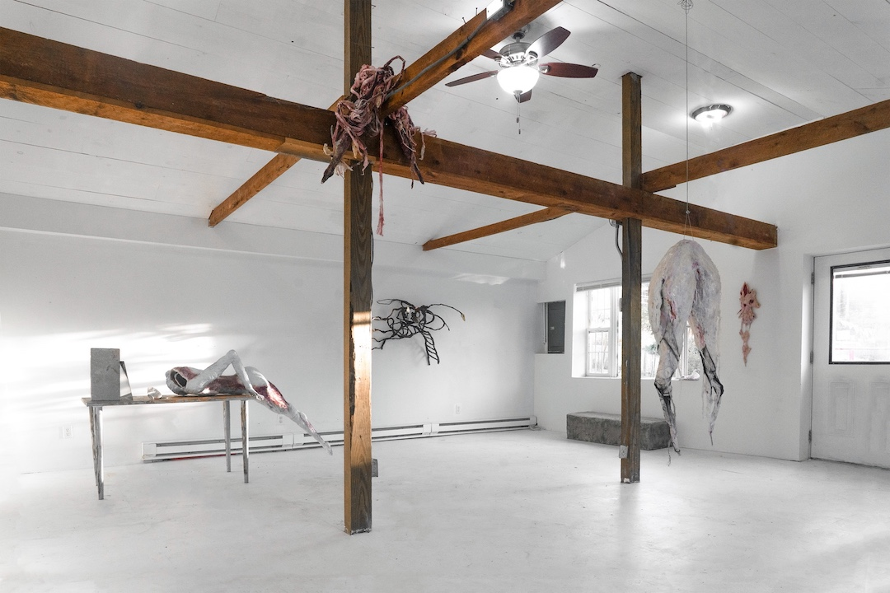
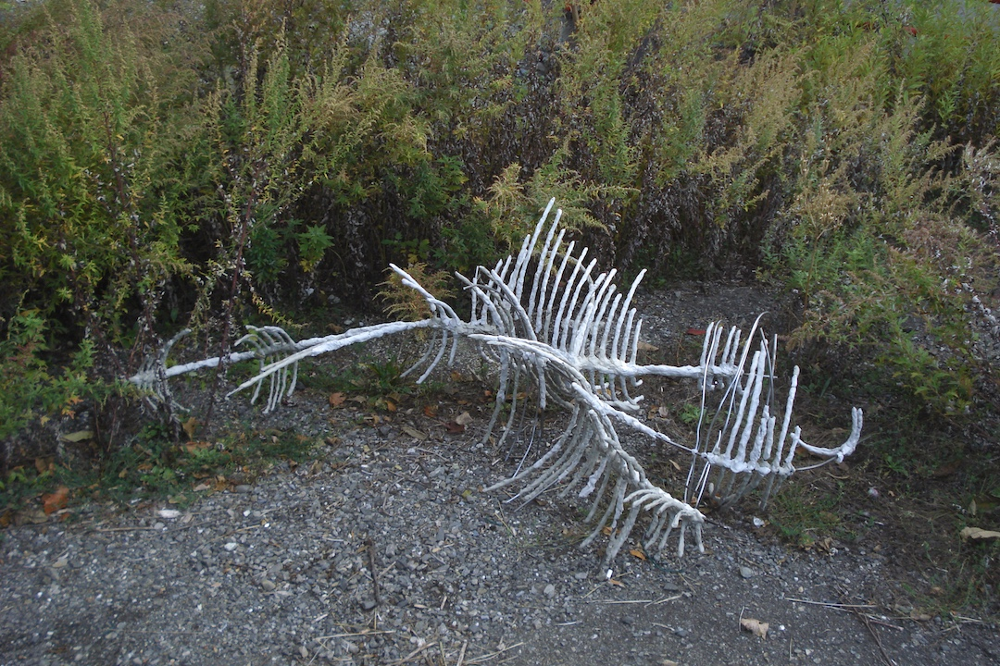
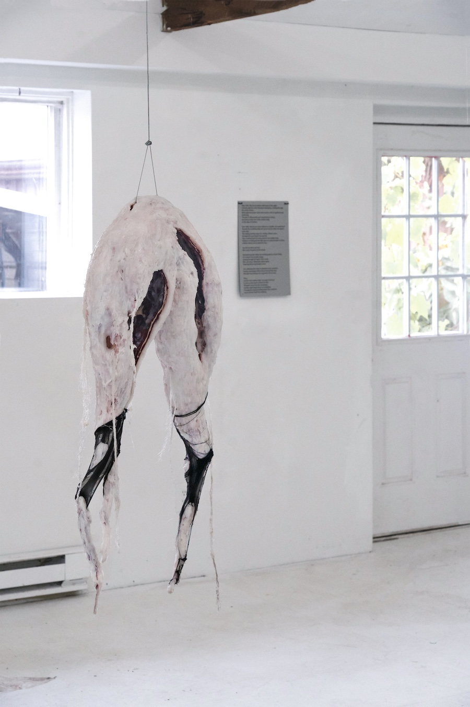
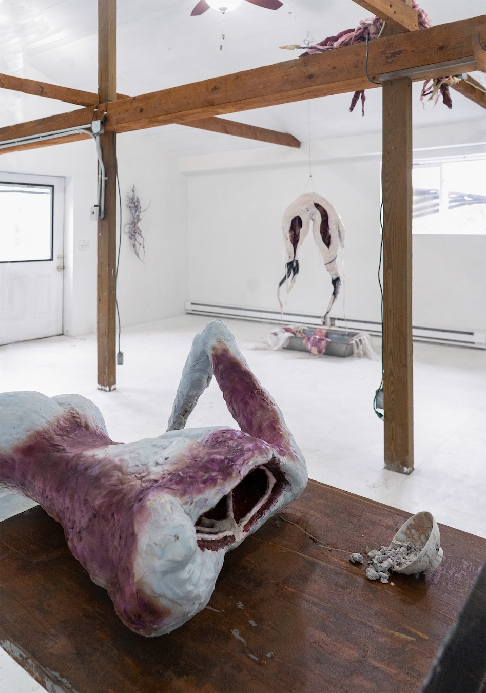
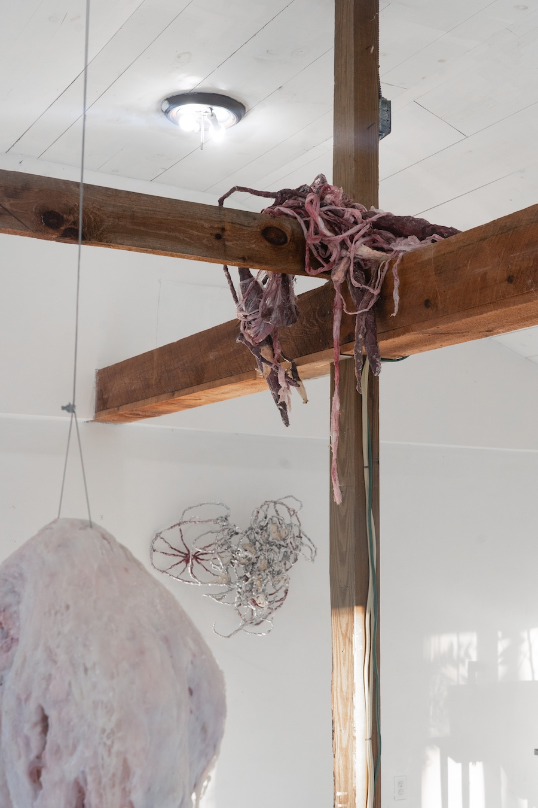

Cass Yao's Errant Progeny at Baba Yaga Gallery

Birth and death cross on the corpus. Sanitation is the untruth, a temporary salve. This is fine to put to words, at least as long as language remains a legal aspect of public life (I wouldn't count on it). But what of experience? What of dimension? At Baba Yaga Gallery, Cass Yao's solo exhibition, Errant Progeny, constructs a tendon between the visitor and their own decay — which is the same as their own growth. Stagnations political and erotic have left modern subjects incompetent, helplessly addicted to "porn," broadly construed (gratifying instanteity). Instead, you could take leave, dawdle in the garden of placenta and map your next birth.

Pass under the gallery beams. Above you drape the suggestions of an intestinal track, a bruised tenderness slung over this silent wooden shoulder. On your left, an overgrown, mold-white crescent hangs in bestial slumber. On your right, a headless human figure, meat wrinkling down the thigh, collapses or dives inside a writing desk, which appears to be the most fragile item in the exhibition. A dish of gray matter spills on its side like half a skull (an opened mind). Abjection carries the tenacity of slime, of pestilence and cataclysm, an anti-egoic assurance that pervades space. The smoothness of the image, its depthless promise, finds no respite here: Yao's tatters might resemble organ-matter, but they imitate no organs in particular. Digitally-dominated cultures rely on photogenic invulnerability, producing a pandemic of sociopathic frostbite. Beneath the porcelain skin of the consumer, progeny continues to squirm.

“Whispers come from the wormholes/another night forged dense by centipedes.” Brown and gray tangles adorn Baba Yaga’s walls like hexed wreaths. Something about here feels like a home, or the skeleton of a home, left to the preening of soft vultures. Any “rot” on display is not the product of entropy or empty motion: it is an impassioned grunt, a willfullness. “Holiness is nothing but the light upon an unknown water surface/a flicker whose source cannot be seen.” Yao lights the wound that founds life on earth, “leaking sanctity,” shining with spit and epoxy.
In his book Hellworld, author Phil Neel writes about the razorback: not quite a "species" of pig, more like a phenomenon where loose American farm hogs mate with imported boars. Their liberation from domestic abuse imbues them with rapid epigenetic developments: not across generations, but immediately within the organisms themselves. Off the farm, "[t]heir snout lengthens and any teeth not clipped at birth sharpen into tusks. They grow both more aggressive and more intelligent." Neel cites the razorback to exemplify the fallibility of containment and the resultant anatomical redemption. Errant Progeny gestures similarly, as the opacity and depth of bone and meat defy mere imagistic representation.

Rui Jiang's curatorial statement describes Yao's work as "return[ing] again and again to the same murky origin," but this origin is also an exit: birth and death cross on the corpus. Off the ceiling drapes an umbilical cord, a dripping invitation. Grip it like a revelatory tendon. Climb back to the Real, where form and muck swirl inside one another in unimpeachable transference.
